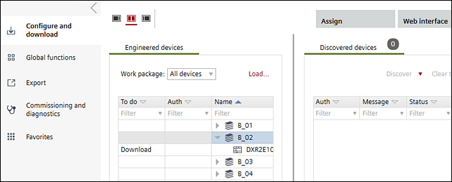

Startup
The Startup component includes tasks that provide for device discovery, loading, node setup, upload, device web interface, and balancing for a customer project.

The Startup component contains the following tasks:
Task | Description |
|---|---|
Open work packages that contain engineered automation stations. Download configuration data, parameter data, new application programs, or manually configure and load automation stations. Update and upload automation stations. | |
Select a command list, specify automation stations to command and monitor, select a parameter and value, and create reports. | |
Create a Pack & Return file, create a series of reports, and display the Report selection dialog box to view one or more reports. | |
Commissioning and diagnostic information can be saved, analyzed and exported e.g. to the field support for further analysis. |
Startup is used in the following workflows:
Installing an ABT project (no subcontracting)
Balancing air/water (with Pack & Go)